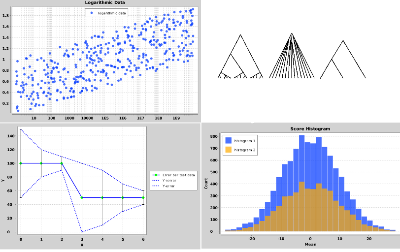

26 May 2014 by Remco Bouckaert
BEASTShell is a scripting language based on BeanShell 2.2 which itself is based on BeanShell. The goal of BeanShell is to provide a scripting environment supporting Java, and consequently its syntax is very much like Java. The main difference is that it is a scripting language, which means we get dynamic typing. Furthermore, there is an interactive interpreter, so you can type things like
{% highlight xml %}bsh % 3+4; bsh % print("Hello world!"); // print() is a BEASTShell command Hello world! bsh % "Hello world!"; bsh % x = 1 + 2 + 3 + 4; bsh % for (i = 0; i < x; i++) print(i); 0 1 2 3 4 5 6 7 8 9 bsh % {% endhighlight %}Here bsh % is the prompt (which you can customise), and the remainder is output to the console. Simple expressions produce the result on the console if show() is on — which it is by default. The second line is the canonical hello-world program, which is quite a bit shorter than what you would need in Java! It can even be shortened to
"Hello world"; since the console print the value of expressions on screen, and the value of "Hello world"; is a String with its familiar content as value.
Note how we use print as a command. Commands are pre-defined functions that come from script files in the class-path. BEASTShell has many such commands, but before we dive in, let’s first install BEASTShell.
BEASTShell is a BEAST package, so to run BEASTShell you need to install BEAST first (available here). Then, you need to install the BEASTShell package. Start BEAUti and select the menu File/Manage Packages and a window pops up where you can select the BEASTShell package and click the “Install” to install the package. It is about 4MB at the moment, which may need a bit to get downloaded, so it may take a little time for the package to become available.
BEASTStudio is a basic IDE for BEASTShell and is probably a good starting point to get familiar with BEASTShell. There are many other ways to run BEASTShell scripts, including in a text-only console, in programs, as servlet, etc., but BEASTStudio is the easiest to get started. There is lots of help, demos and documentation, as well as editors with syntax colouring, a history of everything in the console and a variable inspector showing all available variables and their values. So, there is lots of interactive feedback when exploring BEASTShell programs.
BEASTStudio relies on JavaFX, which means you need to run Java 7 or better, (or install JavaFX separately for Java 6, which only appears
to work on windows). If you run Java 8, JavaFX is loaded automatically, and you do not need to worry about it. If you run Java 7, it depends on the update whether it loads JavaFX or not.
Regardless, BEASTStudio attempts to load JavaFX if it is not already loaded as follows:
If none of the above succeed, BEASTStudio will fail with an error message.
To start BEASTStudio, open the AppStore in BEAST and when BEASTShell is properly installed there should be an entry for BEASTStudio. Double click the icon, or select and click “launch” and BEASTStudio should display itself after a few seconds. If it does not, but the splash screen does, some libraries (e.g. JavaFX) may be missing.
One of the main difference of BEASTShell is in how it treats classes that are derived from the BEASTObject class. To create a BEASTObject in Java requires calling the constructor of the object, initialising each of its inputs then
calling initAndValidate(). BEASTShell does these three steps in one single statement, for example,
is the BEASTShell equivalent of
{% highlight xml %}import beast.evolution.alignment.*; ... { Sequence human = new Sequence(); human.taxonInput.setValue("human", human); human.dataInput.setValue("?", human); human.initAndValidate(); }{% endhighlight %}Note that the name-value pairs in creating the BEASTObject — these are independent of the order. If you leave them out, the order of inputs is used (you can check by showing the BEAST documentation with ?Sequence), which is more error prone since it can change in the future. Value do not necessarily need to be primitive values, you can use more complex objects as well. For example, a two sequence alignment can be created using
{% highlight xml %}human = new Sequence(taxon="human", value="?"), chimp = new Sequence(taxon="chimp", value="?"), data = new Alignment(sequence=human, sequence=chimp);{% endhighlight %}One of the things we hoped to make easier (see previous post) is to calculate statistics on trees, such as the length of a tree. We can define the length of a tree for example like so
{% highlight xml %}len(node) { if (node.isLeaf()) { return node.getLength(); else return len(node.getLeft()) + len(node.getRight()) + node.getLength(); } // to test the len method, create a tree tree = new beast.util.TreeParser(newick="(1:0.2,(2:0.15,3:0.15):0.05)"); len(tree.getRoot()); // returns 0.55{% endhighlight %}This implementation recurses through the (presumed binary) tree with just a few lines of code. It also demonstrates how to create a tree using the TreeParser BEASTObject. If import beast.util.*; was inserted at the start, the even been shorter tree = new TreeParser(newick="(1:0.2,(2:0.15,3:0.15):0.05)"); would be sufficient.
If the tree is not binary, we can use the following for non-binary trees:
{% highlight xml %}// implementation that recurses through the (potentially non-binary) tree len2(node) { if (node.isLeaf()) { return node.getLength(); } else { len = node.getLength(); for (child : node.getChildren()) { len += len2(child); } return len; } } len2(tree.getRoot()); // still returns 0.55 // now define a non-binary tree tree2 = new beast.util.TreeParser(newick="(1:0.2,((2:0.1):0.1))", singlechild=true); len2(tree2.getRoot()); // returns 0.40{% endhighlight %}An alternative implementation that loops over the nodes in just 4 lines of code:
{% highlight xml %}len3(tree) { len = 0; for (node : tree.getNodesAsArray()) len += node.getLength(); return len; } len3(tree); // returns 0.55 len3(tree2); // returns 0.40{% endhighlight %}The parser recognises lines starting with question marks as cries for help. A single question mark followed by an expression brings up help on the expression (in BEASTStudio this is shown in the help panel). A double question mark followed by an object or class shows public fields and methods for that object or class (again, in the help panel when running BEASTStudio).
To get help on a command, use help(“cmd”); of alternatively ?cmd e.g.
{% highlight xml %}bsh % help("print"); bsh % ?print bsh % help("dnorm"); bsh % ?dnorm{% endhighlight %}To get help on a BEASTObject, use help(BEASTObject); e.g.
{% highlight xml %}bsh % ?beast.core.MCMC or, if you already created an MCMC object, asking help for the object will have the same results: bsh % tree = new beast.evolution.tree.Tree() bsh % ?tree bsh % javap(tree) bsh % ??tree{% endhighlight %}To get help on any other class, use help(Class); e.g.
{% highlight xml %}bsh % help(java.util.ArrayList); bsh % ??java.util.ArrayList; bsh % data = new ArrayList(); bsh % ?data{% endhighlight %}There are a few demos that show off capabilities of BEASTShell. To list the set of demos, use demo();. There are four demos at the moment of writing:
To run a demo, use demo(demoname); e.g. demo("chart"); to start the chart-demo.
There is already a large number of commands that come with BEASTShell, divided into three categories:
These are the BEAST commands (at present):
| demo | demonstrate some BEASTShell capabilities in BEASTStudio |
| help | provide online help |
| c | construct a list of objecst, e.g. x=c(1,1.5,2,2.4) |
| assertEquals | handy for testing, e.g. assertEquals(dbeta(0.4, 5, 1, false), 0.128, 0.0001); |
| beast | start a BEAST run |
| beauti | start a BEAUti session |
| appstore | start the BEAST AppStore |
| requires | indicate some BEAST package is required, and install if not present. |
| trace | plot trace and show statistics of a BEAST trace file. |
| edit | edit BEASTObject through a dialog. |
| plot | plot component to plot panel or to file. |
| regression | calculate regression line through a series of points. |
The BeanShell commands are mostly commands for starting scripts and performing shell-like functions. From the BeanShell documentation, these are a few useful commands:
The over 125 math and stat commands are inspired by R’s stats and base package, and include things like rnorm to generate random numbers from the normal distribution, max to get the maximum of a list of numeric objects, or an array of objects, sum to sum a list or array of numbers, etc.
BEASTShell contains a number of classes for 2D-charting and drawing trees. A few examples are shown below. To create a plot, use the beast.app.shell.Plot class. You can add various series to a plot using the beast.app.shell.Series class. For more information and options available for plots, use the help command
{% highlight xml %}?beast.app.shell.Plot ?beast.app.shell.Series{% endhighlight %}Also, check out the code used in the chart-demo.

To create plots of trees, check out the classes beast.graphics.RootedTreeDrawing for single rooted trees, beast.graphics.UnrootedTreeDrawing for unrooted trees and beast.graphics.TreeDrawingGrid to draw multiple trees on a single plot.
All of the classes mentioned here will produce output in the plot-pane of BEASTStudio when new objects of them are created.
The best way to learn more is to run the demos — read the output on the console while running the demo. Read the documentation and browse the help screen in BEASTStudio.
Next week, we will have a look on how to perform the simulation study we did before, but with much less hassle using BEASTShell.